Commissions
Discover the various commissions that shape the NSNX association.
What is a commission?
In NSNX, a commission is a dedicated group of students who take charge of a specific domain within the association. These commissions are essential for ensuring the smooth operation of the association and achieving its goals.
Each commission plays a key role in creating a dynamic and inclusive student environment. By focusing on specific areas such as events, social media, or sponsorships, commissions allow students to contribute their skills and ideas to the success of NSNX.
General
The General Commission oversees internal coordination and ensures smooth communication between all teams within the association. It plays a vital role in maintaining the operational efficiency of NSNX.
By supporting the daily functioning of the association, the General Commission helps create a cohesive and well-organized environment where all members can thrive and contribute effectively.
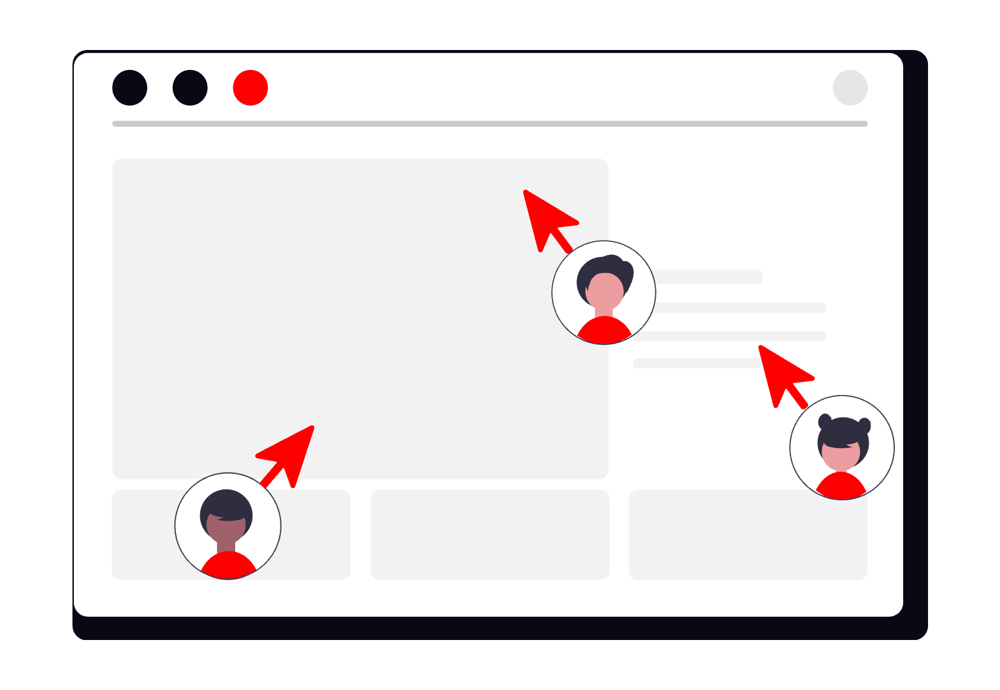
Events
The Events Commission is dedicated to creating memorable experiences for all NSNX members. From lively parties to engaging themed nights, this commission ensures there’s always something exciting happening.
By organizing a variety of events throughout the year, the Events Commission fosters a sense of community and provides opportunities for students to connect, relax, and have fun outside of their academic responsibilities.
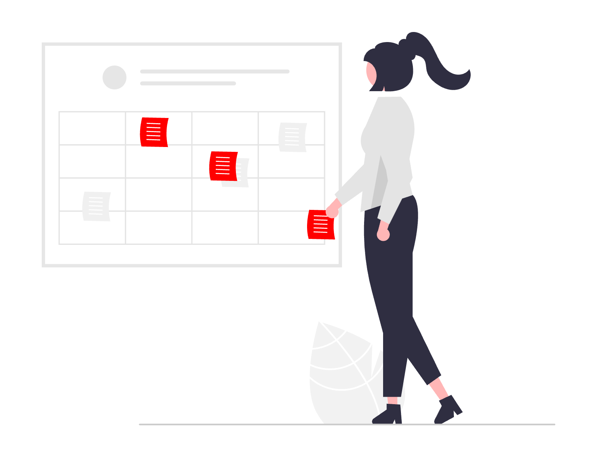
Conferences
The Conferences Commission connects students with inspiring professionals through engaging talks and interactive panels. These events provide valuable insights into various fields and industries.
By fostering connections with experts, the commission opens the door to new ideas, innovative perspectives, and potential career paths for Neuro-X students.
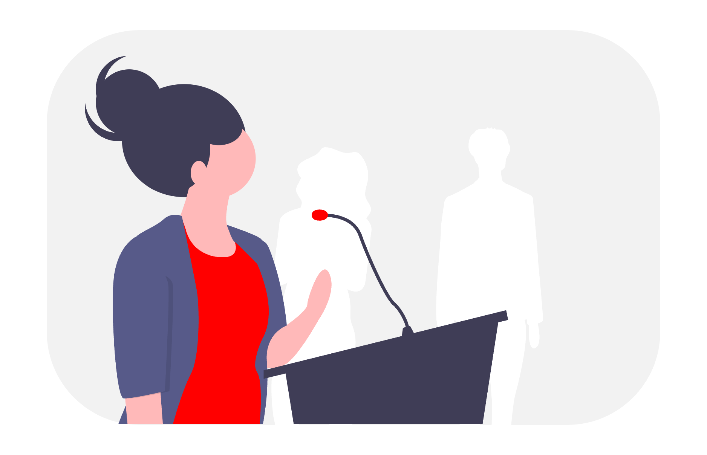
Interviews
The Interviews Commission highlights student voices and professional insights through engaging interviews shared on our platforms. These interviews provide a platform for students to share their experiences and achievements.
By featuring professionals, the commission also offers valuable advice and inspiration for Neuro-X students, helping them explore potential career paths and opportunities.
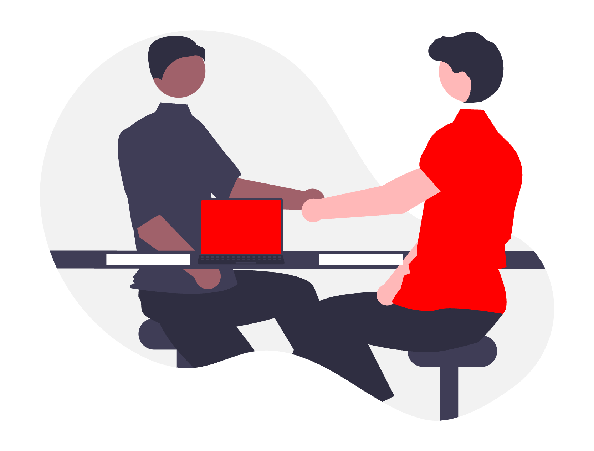
Team buildings
Focused on strengthening bonds, the Team Building Commission organizes activities that foster trust, collaboration, and friendship within the association.
These activities create a supportive environment where members can connect on a deeper level, enhancing teamwork and building lasting relationships within NSNX.
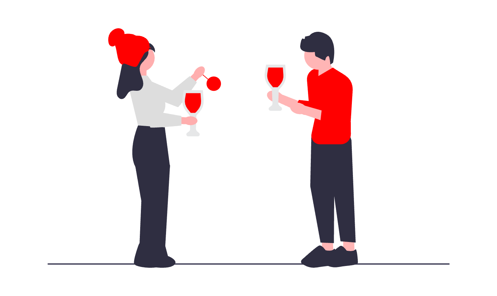
Social medias
Responsible for the association’s online presence, the Social Media Commission ensures that members stay informed and engaged through creative posts and stories.
By sharing updates, event highlights, and engaging content, this commission plays a key role in building a strong and connected community within NSNX.
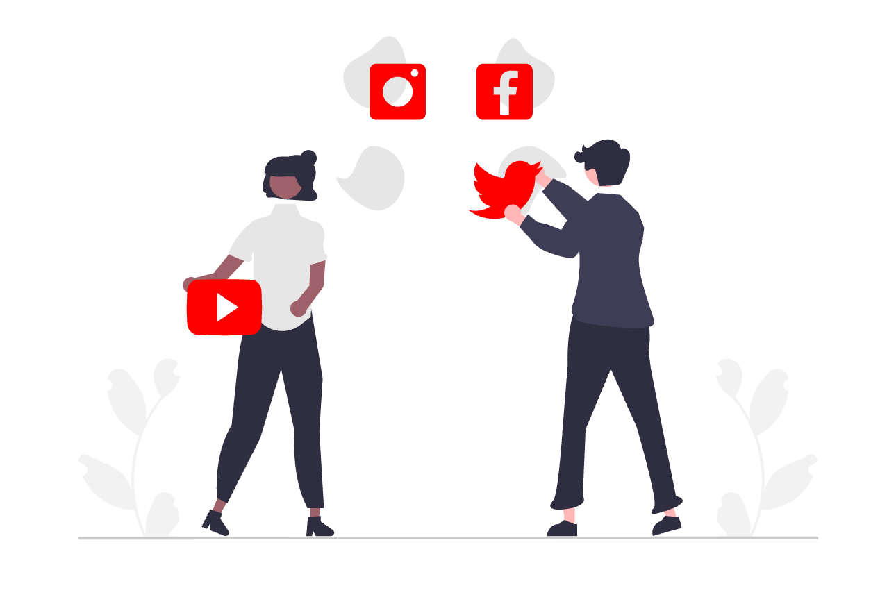
Sponsoring
The Sponsoring Commission builds partnerships with companies and institutions to support NSNX activities. These collaborations provide valuable resources and funding for the association.
By fostering strong relationships with external partners, the commission ensures the sustainability of NSNX initiatives and creates opportunities for students to connect with industry professionals.
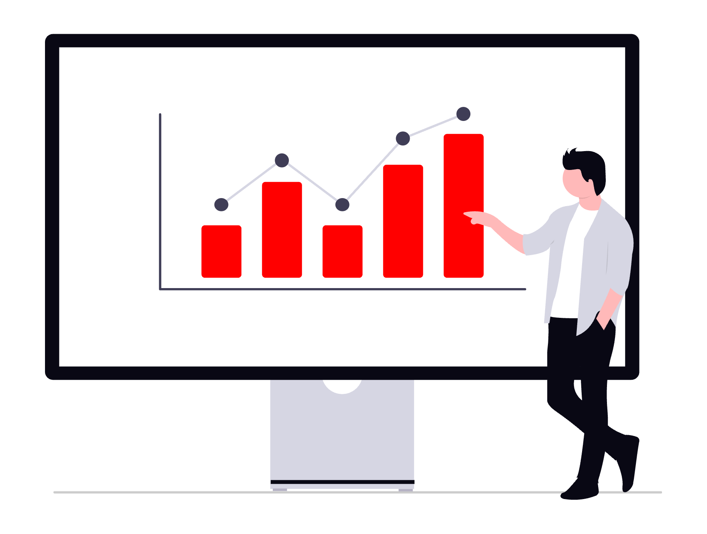
Delegates
Delegates represent NSNX members and act as a bridge between students and the school administration. They ensure that the concerns and ideas of students are communicated effectively.
By advocating for the student body, delegates play a crucial role in shaping policies and decisions that enhance the overall student experience within the Neuro-X program.
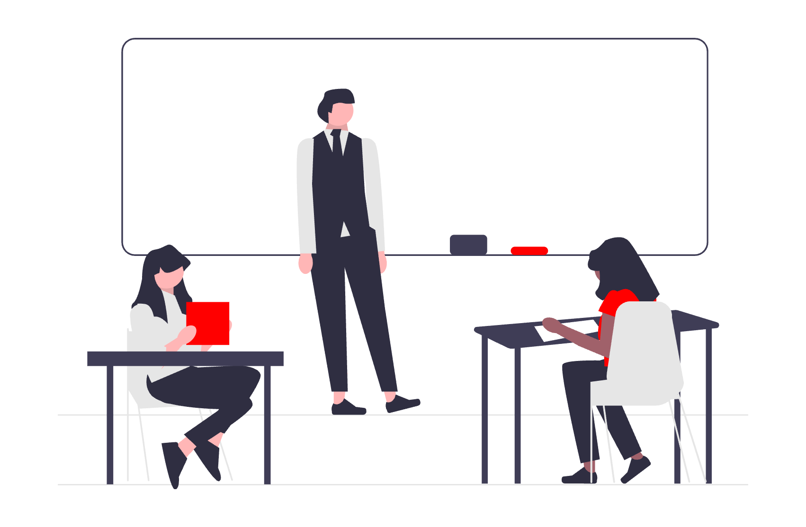
Drive
The Drive Commission ensures that all shared resources, files, and documents are well-organized and easily accessible to everyone in the association.
By maintaining a structured and efficient system, this commission helps streamline collaboration and ensures that members can quickly find the materials they need to succeed.
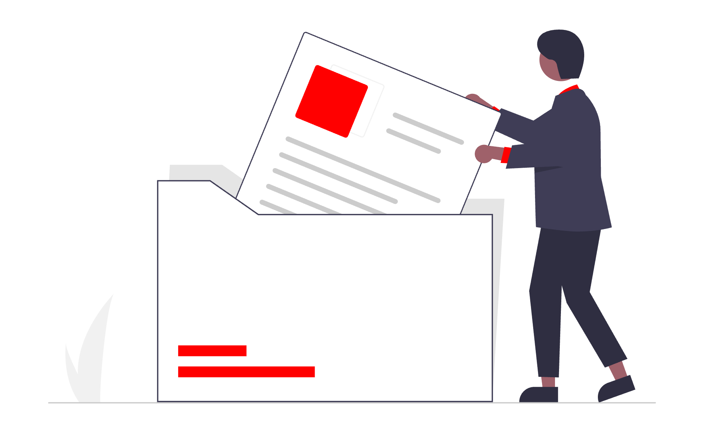
Website
The Website Commission develops and maintains NSNX’s online platform, ensuring that members have clear and easy access to important information, events, and updates.
By keeping the platform up-to-date and user-friendly, this commission plays a vital role in connecting the Neuro-X community and supporting the association’s activities.
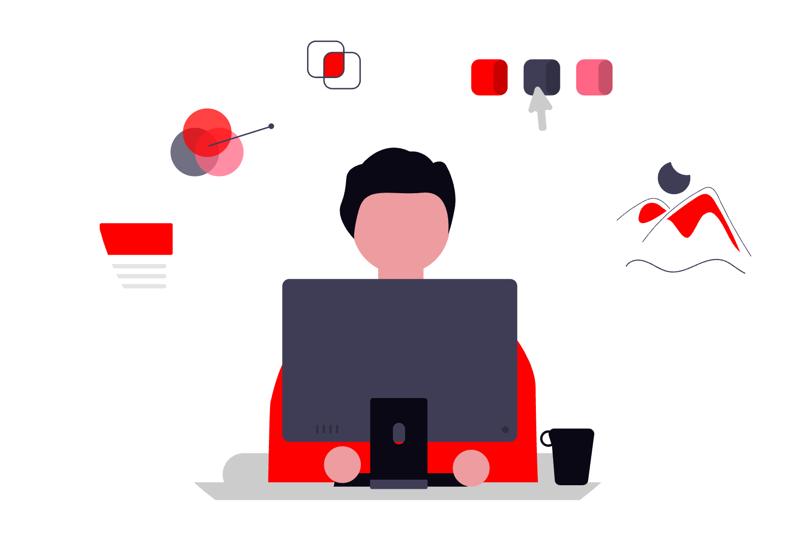
Hoodies
Bringing style and identity, the Hoodies Commission designs and manages the production of custom apparel that lets everyone wear NSNX with pride.
From concept to delivery, this commission ensures that the apparel reflects the spirit of the Neuro-X community, fostering a sense of belonging and unity among its members.
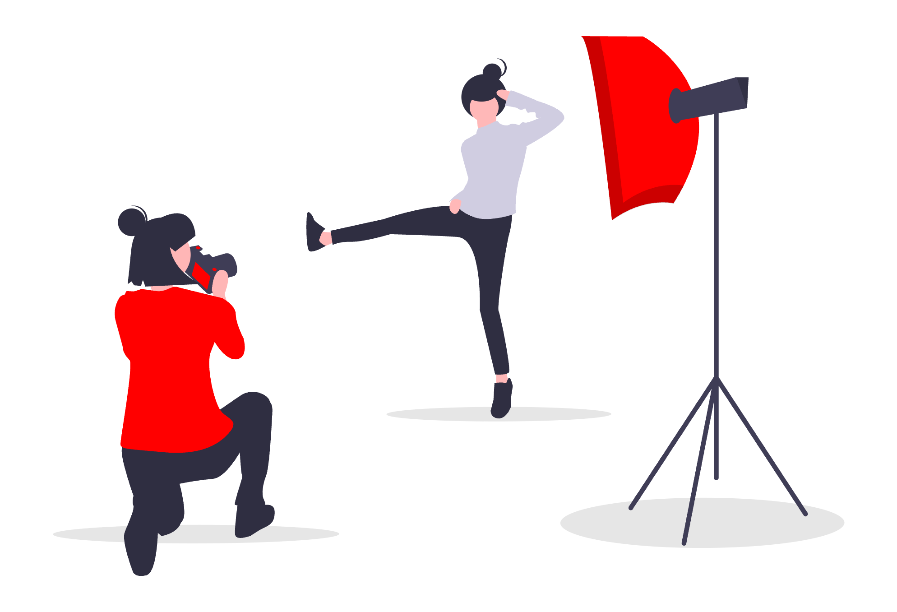